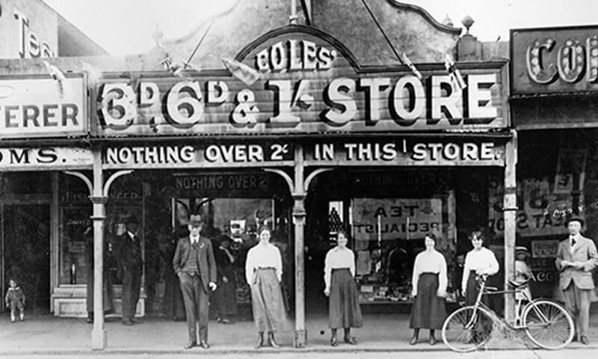
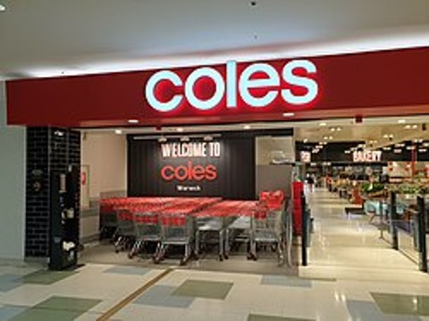
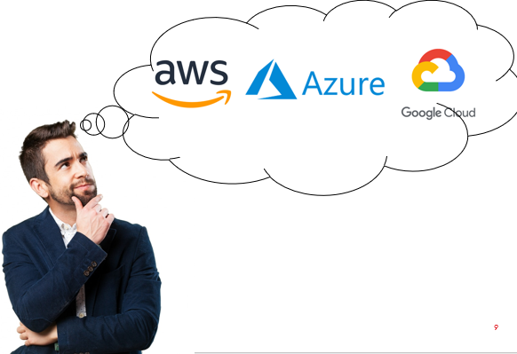
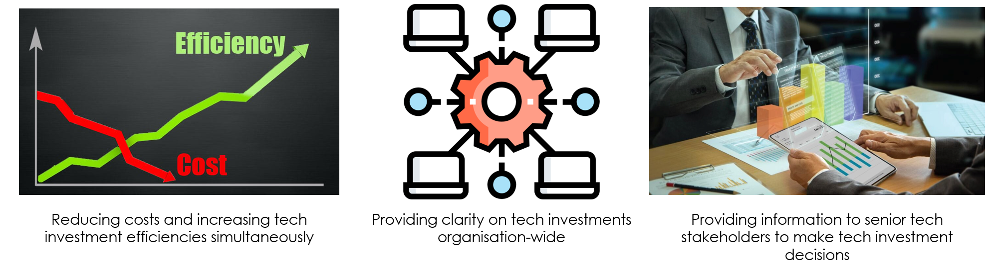
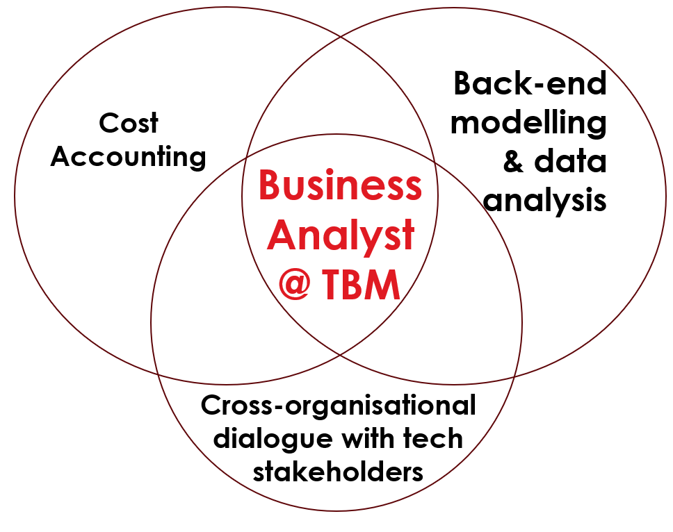
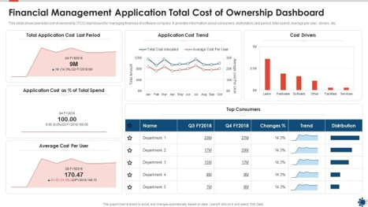
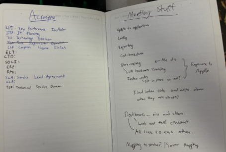
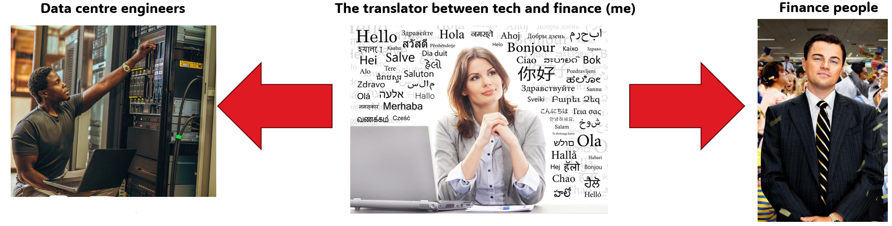
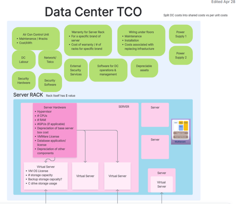
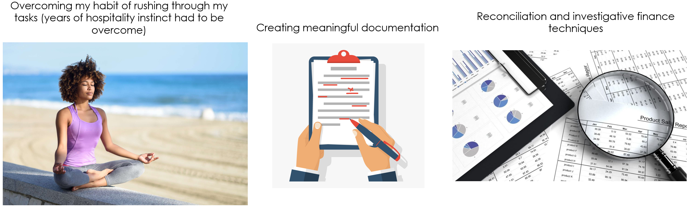

Introduction: What did I want from my placement?
Throughout my academic journey, I've always found myself drawn to both STEM and the humanities. In school, I was captivated by mathematics and physics, but equally fascinated by economics and social studies. This dual interest led me to pursue a unique combination: Computer Science and Commerce at university. I wanted more than just technical skills—I craved a role where I could engage with clients, collaborate across departments, and bridge the gap between computational concepts and business strategy.
My goal was clear: to improve my ability to translate complex technical and financial terminologies into language that everyone could understand. This aspiration became reality when I joined Coles as a Business Analyst in the Technology Business Management (TBM) team—a role that would challenge and develop me in ways I never anticipated.
Understanding Coles Beyond the Checkout
Most Australians know Coles as their local supermarket, but behind those 850+ stores across the country lies a sophisticated technology-powered operation. From the early 1900s to today, Coles has evolved into far more than just a grocery retailer—it's a tech giant that helps Australians eat and live better every day.
Technology has been integral to Coles since the 1990s, powering everything from data analytics and supply chain automation to online services. The digital transformation accelerated dramatically in recent years, with cloud services, AI, and advanced infrastructure becoming crucial to daily operations. But with this technological growth came a significant challenge: managing the exploding costs and complexity of IT systems.
What is Technology Business Management?
Technology Business Management (TBM) is a value management framework that creates a common language between Finance, Business and Technology.
TBM enables transparent conversations about cost, consumption, performance, and value - empowering Coles to make data-driven decisions, align Technology investments with business strategy, and optimise both spend and outcomes.
Why do we even need TBM?
Imagine you're developing an application and reach the point where you need database infrastructure. Under pressure to meet deadlines, you decide to outsource to a cloud provider. Since your multi-billion dollar corporation is covering the costs, you select powerful hardware with premium features from AWS.
At year's end, an expensive invoice arrives. Now you must explain to your general manager why costs spiralled—only to discover the company already had pre-existing contracts with AWS and Azure that could have been leveraged. Without oversight, duplicate spending, security risks, and operational inefficiencies multiply rapidly.
This is exactly why TBM exists! Without oversight, costs spiral out of control. Our team would prevent these scenarios, optimise technology costs, and ensure those savings are passed on to customers through initiatives like lower grocery prices.
The Growing Importance of Technology Finance

In Australia alone, IT spending is projected to surge 8.7% in 2025, driven primarily by AI, cybersecurity, and hardware demands. With rapid shifts to cloud services like Microsoft Azure and AWS, companies are investing heavily to stay competitive, innovate faster, and support remote workforces. This makes technology finance not just important—it's mission-critical.
As a Business Analyst in TBM, I contributed to reducing costs while simultaneously increasing technology investment efficiency. Our work provided clarity on tech investments organisation-wide and equipped senior stakeholders with the information they needed to make informed decisions about technology strategy.
My Role: Skills and Responsibilities
Working as a Business Analyst in TBM required a unique blend of capabilities. I found myself at the intersection of three critical domains: cross-organisational dialogue with technology stakeholders, back-end modelling and data analysis, and cost accounting. Each day involved navigating between these worlds, translating concepts and facilitating understanding across teams with vastly different vocabularies and priorities.
Technical Analysis
Back-end modelling, data analysis using Apptio, and understanding complex technology infrastructure and architecture.
Financial Acumen
Cost accounting, reconciliation techniques, and creating Total Cost of Ownership (TCO) models for infrastructure spending.
Communication
Cross-organisational collaboration, translating technical concepts for finance teams and financial concepts for engineers.
Three Key Objectives for My Placement
Entering this internship, I had three clear goals that would guide my development and shape my learning experience.
1. Gaining Exposure to Industry Technology
I wanted to apply my academic knowledge to real-world applications. While university taught me problem-solving and computational thinking, I knew that hands-on experience with industry software was something no classroom could truly replicate. Technology finance is an emerging niche that's becoming increasingly prevalent in corporations, and I recognised this as a valuable career opportunity.
The first half of my placement was genuinely overwhelming. I had no formal training on Apptio, our primary backend system. To overcome this, I leaned on analogies and connected concepts from my data science courses—particularly SQL—to understand how Apptio's model flows. By linking academic concepts to the practical logic of our systems, I began to grasp the underlying architecture before even learning proper syntax.
By the end of my placement, I had developed proficiency in Apptio and contributed to creating dashboards and reports that stakeholders used to make significant financial decisions. This transformation from overwhelmed newcomer to confident contributor was one of my proudest achievements.
2. Understanding Corporate Structure and Change Management

Every organisation has a unique structure, and academic management theory only provides a foundation. At Coles, TBM was still relatively new—the team had been established less than a year before my arrival. This meant there was limited existing documentation, making independent research challenging.
Understanding organisational structure proved crucial for technology finance work. I needed to know who reported to whom, who validated tech spending, and why TBM existed as a separate function from accounting. Initially, meetings were confusing. I started keeping a notebook where I tracked acronyms, roles, and relationships. I sketched diagrams to visualise various structures and asked colleagues questions to build my understanding. This practice helped me see how my work fit into the bigger picture—transforming tasks from mere assignments into meaningful contributions.
This clarified understanding allowed me to work more independently, contribute more effectively in meetings, and build stronger cross-team relationships. It demonstrated to both my team and stakeholders that I was actively engaged in solving business problems.
3. Translating Technical and Financial Terminologies
During my internship interviews, I had identified improving my ability to translate technical concepts into everyday language as a primary goal. This skill is highly valued in the workplace, and I was determined to develop it.
My proudest achievement came when I was tasked with developing a Total Cost of Ownership (TCO) dashboard for infrastructure spending at Coles. The company operates both internal and outsourced infrastructure, and I needed to bridge the gap between technical hardware concepts and financial reporting. This meant explaining computer architecture to my finance team and financial concepts to data engineers.
This was intimidating—my double degree hadn't covered much computer hardware, and my knowledge came purely from personal curiosity over the years. I sketched technical diagrams of data centre architecture and categorised vendor and fixed asset costs into different infrastructure types. This work enabled more accurate cost calculations and helped Coles evaluate optimal data storage options.
Key Outcomes from the TCO Project:
- Significantly improved my ability to communicate complex ideas clearly and effectively across disciplines
- Enabled Coles to make better-informed decisions about data storage options
- Realised that my interest in computer engineering concepts was actually a valuable, employable skill
- Took ownership and initiative on a project, demonstrating leadership and independence
- Strengthened both my accounting knowledge and technical understanding, creating powerful synergy between disciplines
Additional Skills Developed
Beyond my three primary objectives, I developed several other valuable capabilities. I learned to create meaningful documentation that others could reference and understand. Coming from years of hospitality work where speed was everything, I had to overcome my habit of rushing through tasks—learning that corporate work often requires careful, methodical attention to detail and thorough quality checks.
I also developed reconciliation and investigative finance techniques, essentially becoming a detective who tracks down discrepancies and understands why numbers don't match. This analytical work was both challenging and deeply satisfying.
Career Insights and Future Goals
This internship clarified what I truly enjoy in professional work: problem-solving, analysis and detective work, and cross-organisational collaboration. I thrived in situations that required me to dig deep, connect dots, and facilitate understanding between different teams.
The knowledge I gained about both the technology and retail industries feels universally applicable. Technology skills transfer across any organisation, and understanding the operations behind a supermarket giant provides insights relevant in any country—a particularly valuable asset since I aspire to travel for my career.
Looking forward, I want to continue utilising my ability to translate between technology and finance while engaging in problem-solving and analysis. Two potential career paths particularly excite me:
Technology Sales (B2B): After working in tech finance, I believe I could effectively demonstrate the value behind technology products to business clients. Understanding both the technical capabilities and financial implications gives me a unique perspective on how to position solutions.
Consulting: Providing creative technology advice and services to businesses appeals to my desire for variety, problem-solving, and cross-organisational engagement. The consulting model would allow me to apply lessons learned at Coles across diverse industries and challenges.
Reflections
My six months with the Technology Business Management team at Coles exceeded my expectations. I entered wanting to develop specific skills and left with not only those capabilities but also a clearer sense of my professional identity and career direction. The experience taught me that being a translator between technical and business domains isn't just a skill—it's a competitive advantage in today's technology-driven business landscape.
To the IBL team at Monash and the TBM team at Coles who invested their time and knowledge in my development: thank you for an experience that has fundamentally shaped how I think about my future career.
"The most valuable skill I developed wasn't technical or financial—it was learning to see problems through multiple lenses simultaneously and translate between worlds that often struggle to understand each other."